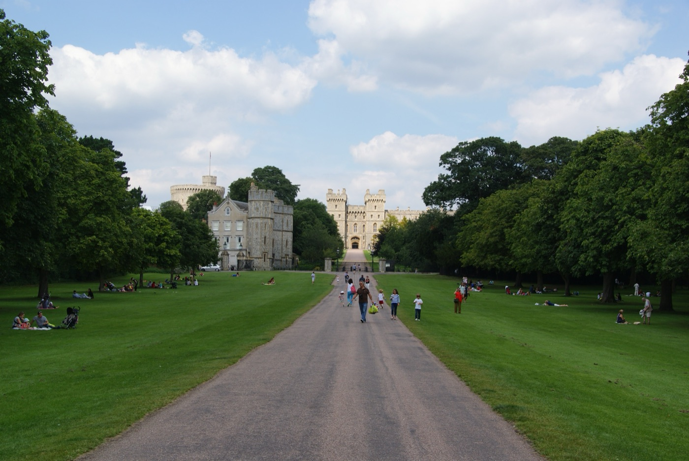
I set veri di Harry Potter a venti minuti di treno da Euston, e il castello abitato più antico del mondo. Due giornate, due treni.
Quale scegliere
Si va e si torna in giornata, con il treno da una stazione del centro: Euston per gli Studios, Waterloo o Paddington per Windsor.
Gli Studios di Harry Potter sono la gita delle ragazze: set, costumi e oggetti veri degli otto film, in un capannone dove si gira ancora oggi. Windsor è la gita della storia: il castello abitato più antico del mondo, la tomba di Enrico VIII e della regina Elisabetta, una cittadina sul Tamigi e, sull'altra riva, il collegio di Eton.
Andate in un giorno feriale. La settimana dal 15 al 19 febbraio 2027 è la mezza vacanza scolastica inglese (half-term) a Londra e nell'Hertfordshire: gli Studios sono pieni di famiglie e allungano gli orari. Prima del 13 febbraio i giorni feriali sono più tranquilli.
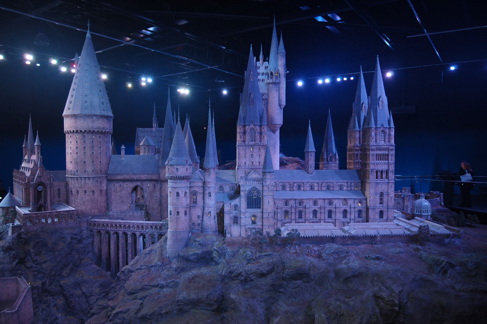
Gita 1 · Leavesden
Qui sono stati girati tutti gli otto film di Harry Potter. I set non sono stati buttati: si cammina dentro.
Gli studi sono a Leavesden, vicino a Watford, a nord di Londra. Il reparto artistico dei film vi ha disegnato 588 set; i più famosi sono stati rimontati in due grandi teatri di posa e in un cortile all'aperto, il Backlot. Si visita a piedi, senza guida e senza limite di tempo.
Il modellino di Hogwarts in fondo al percorso è in scala 1:24, misura 15 metri di diametro e ha più di 2.500 luci in fibra ottica: è servito per tutte le inquadrature del castello da fuori. Per costruirlo ci sono voluti oltre 74 anni di lavoro di una persona. È nel Guinness dei primati.
Studio Tour · Cosa non perdere
Costruita per il primo film e usata in tutti gli otto. Da gennaio ad aprile 2027 c'è l'evento Hogwarts House Spirit: per la prima volta sono appesi gli stendardi di tutte e quattro le Case, e c'è un Cappello Parlante animatronico. È incluso nel biglietto.
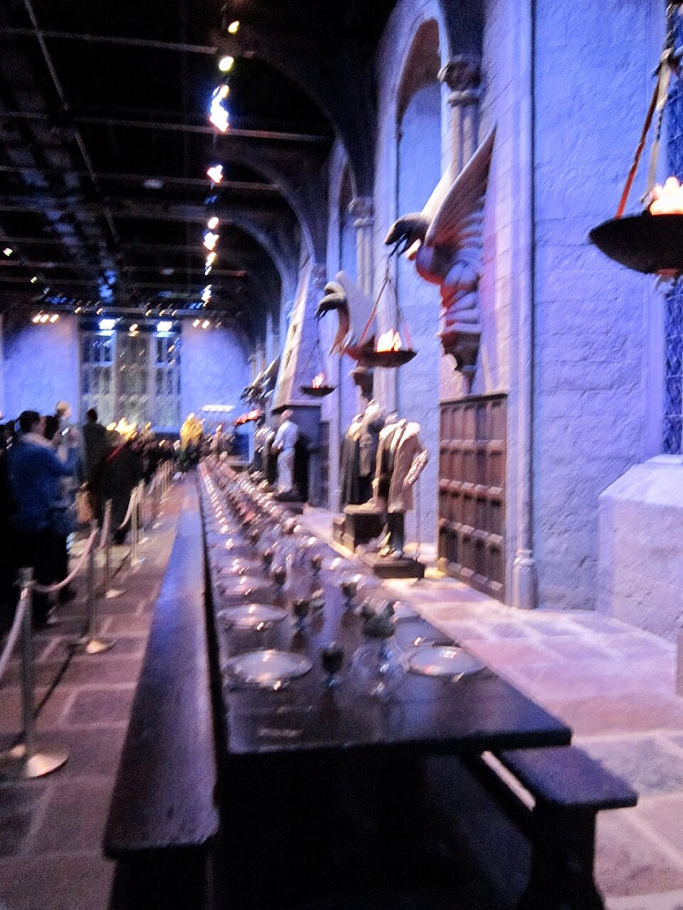
Diciannove alberi finti, ciascuno con un tronco di oltre tre metri e mezzo di diametro, nebbia e luci basse. In fondo c'è la tana di Aragog, il ragno gigante: chi ha paura dei ragni può tirare dritto.
Un pezzo della stazione di King's Cross ricostruito in studio per l'ultimo film, con binari e locomotiva veri. Nell'ultimo vagone si entra e si passa tra gli scompartimenti.
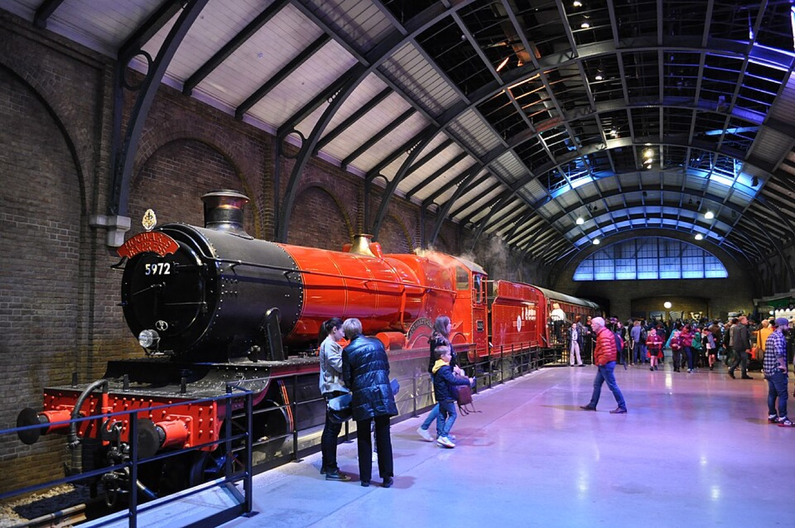
Dolce, con la schiuma in cima: si prende nel boccale da portare a casa, o ghiacciata (Frozen). C'è anche il gelato alla Burrobirra. Fuori, nel Backlot, ci sono il Nottetempo, la casa di Privet Drive e il ponte di Hogwarts.
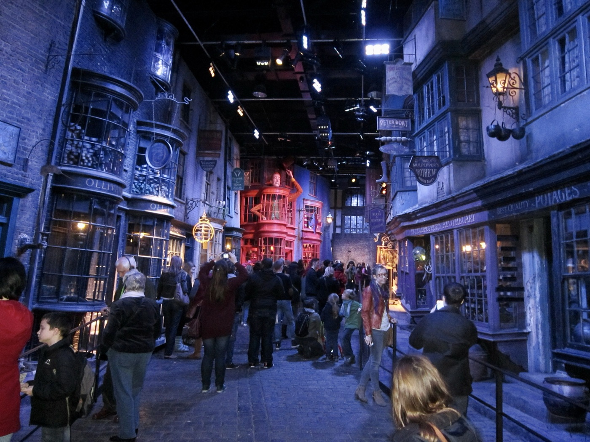
La via dei negozi dei maghi, ispirata alla Londra di Dickens. Durante le riprese il negozio di Olivander conteneva 17.000 scatole di bacchette, ciascuna segnata a mano con numeri e rune. La vetrina dei Tiri Vispi Weasley espone 120 scherzi disegnati uno per uno.
Per la banca dei folletti sono state coniate più di 210.000 monete finte. Nella camera blindata dei Lestrange si fa la foto con la spada di Grifondoro. L'armadio dei ricordi di Silente custodisce quasi 900 fiale, con le etichette scritte a mano.
Del ponte coperto di Hogwarts, quello nel Backlot, è stato costruito davvero solo un tratto: il resto, circa 60 metri, è stato aggiunto al computer. Anche Diagon Alley è servita due volte: con pezzi del set è stata montata Hogsmeade, il villaggio del terzo film.
All'ingresso si ritira gratis l'Activity Passport: una caccia al Boccino d'Oro nascosto nei set, con quiz e timbri. La foto sul manico di scopa davanti al green screen si paga a parte (£22,50 a persona, o £60 per 3-4 persone).
Studio Tour · Organizzarsi
Con il contactless si paga da soli, ma per 8 conviene il GroupSave: da 3 a 9 persone che viaggiano insieme, fino a un terzo di sconto sui biglietti Off-Peak. Le ragazze di 12 e 13 anni con l'Oyster possono avere lo sconto Young Visitor, metà prezzo per 14 giorni: lo attiva il personale TfL in stazione.
Studio Tour · Mangiare e consigli
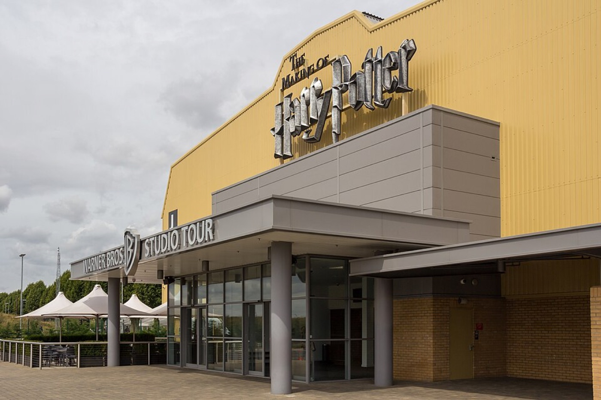
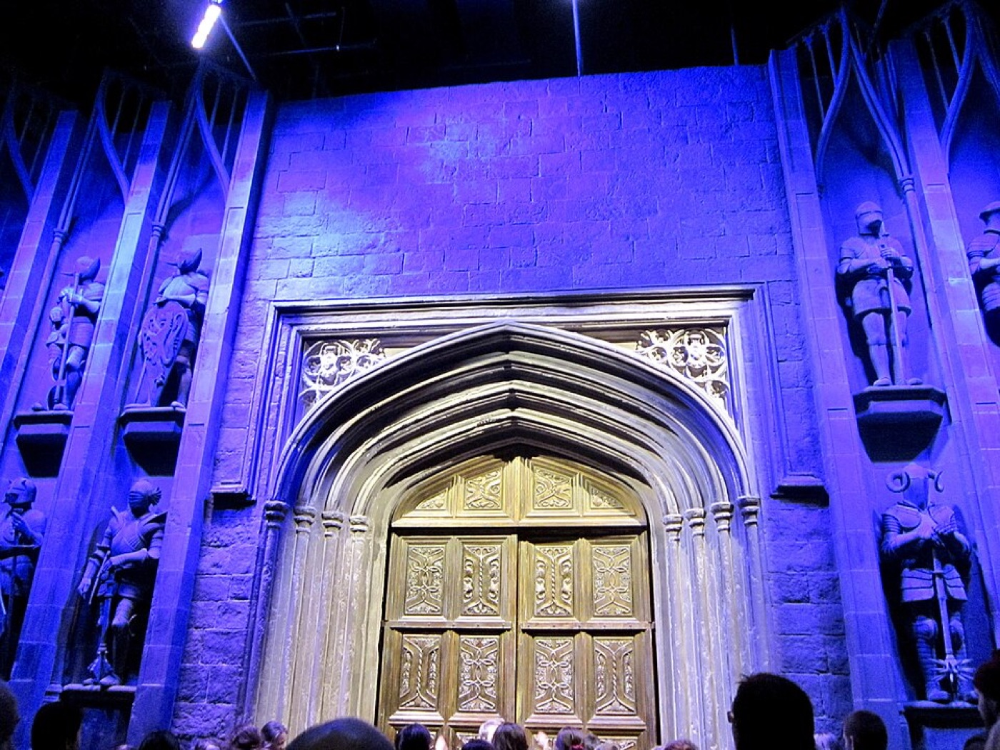
Nell'atrio c'è la Food Hall: pizza, burger, fish & chips e pie da £13 a £20, menu per ragazzi £8,45. Nei giorni feriali fuori dalle vacanze chiude alle 17. A metà percorso il Backlot Café fa burger e hot dog da £13 a £16. Si può portare il pranzo da casa e mangiarlo nel Backlot o nell'area picnic all'aperto.
Lo Studio Shop, all'uscita, vende bacchette dei personaggi (sul negozio online ufficiale costano £32), abbigliamento e dolci. Per entrare serve il biglietto del giorno. Le Cioccorane si comprano nel negozio della ferrovia, dopo il Binario 9¾.
Nei giorni feriali di febbraio l'ultimo ingresso è alle 16, ma la Food Hall chiude alle 17: un ingresso tra le 10 e le 12 lascia il tempo per tutto, con il pranzo a metà percorso al Backlot. Contate un'ora e mezza di viaggio dall'hotel e 20 minuti di anticipo.
Il guardaroba è gratis: lasciate giacche e zaini, il percorso è caldo e lungo. Si può fotografare ovunque tranne nel cinema iniziale e nelle aree green screen. Il wi-fi è gratis. Le borse grandi passano allo scanner.
Tornando a Euston, la stazione di King's Cross è vicina: c'è il Binario 9¾ dei film, con il carrello nel muro e un negozio di Harry Potter. Una passeggiata prima di cena.
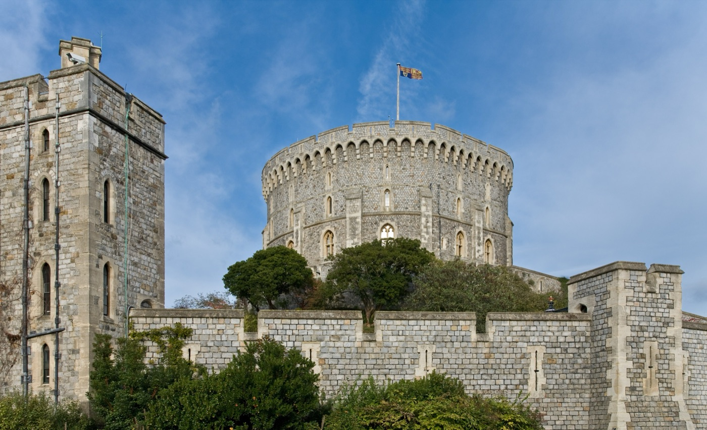
Gita 2 · Windsor
Il castello abitato più antico e più grande del mondo: ci hanno vissuto 40 sovrani, ed è ancora una residenza del re.
Lo fondò Guglielmo il Conquistatore nell'XI secolo, su una collina sopra il Tamigi. Oggi è un palazzo reale in funzione: si visitano gli appartamenti di Stato, la casa delle bambole della regina Mary e la cappella di San Giorgio, dove sono sepolti undici sovrani.
La Round Tower, la torre al centro del castello, non è rotonda: vista dall'alto ha la forma di una D. Fu costruita nel XII secolo da Enrico II; Giorgio IV la fece alzare di 10 metri perché sembrasse più imponente.
Windsor · Dentro il castello
Le sale dove il re riceve i capi di Stato, con quadri di Holbein, Van Dyck e Rubens. Nella Waterloo Chamber Giorgio IV celebrò la vittoria su Napoleone. La St George's Hall bruciò nell'incendio del 20 novembre 1992: un faretto diede fuoco a una tenda, le fiamme durarono 15 ore e distrussero 115 stanze. Il restauro finì esattamente cinque anni dopo, con un nuovo tetto di quercia inglese.
Costruita tra il 1921 e il 1924 dall'architetto Edwin Lutyens con più di 1.500 artigiani, tutta in scala 1:12. Ha la luce elettrica, l'acqua corrente, gli ascensori funzionanti, una cantina piena di bottiglie e una biblioteca di oltre 200 libri in miniatura, scritti apposta.
Le stanze private fatte decorare da Giorgio IV, come il Crimson Drawing Room, tra le più costose d'Inghilterra. Si vedono solo dall'autunno alla primavera: a febbraio 2027 sono aperte, tranne venerdì 5 e venerdì 19.
Andate prima nella cappella, la mattina: dopo le 14:30 l'ingresso può essere limitato per la folla. Gli appartamenti di Stato restano aperti fino alle 16:15. Entrate al castello verso le 10:30 se è giorno di Cambio della Guardia.
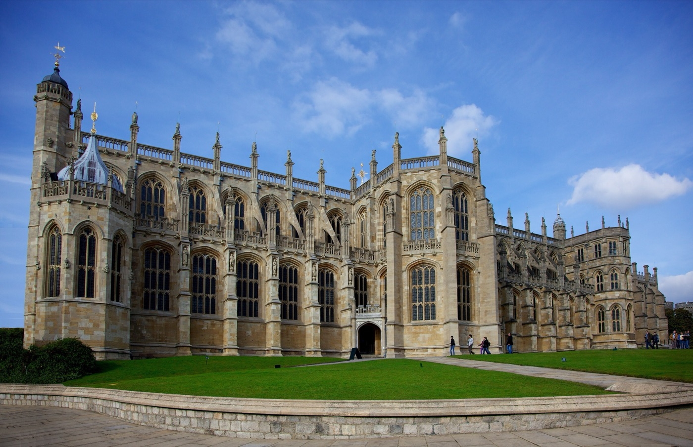
Windsor · Cappella e guardie
Cominciata nel 1475, è la chiesa dell'Ordine della Giarrettiera e il posto dei matrimoni reali. Nel coro sono sepolti Enrico VIII, la sua terza moglie Jane Seymour e Carlo I, il re decapitato. Nella piccola cappella di Giorgio VI riposano la regina Elisabetta II, il principe Filippo, la regina madre e la principessa Margaret. Si visita con il biglietto del castello lunedì, giovedì, venerdì e sabato, fino alle 16; dopo le 14:30 l'accesso può essere limitato. Dentro niente foto.
Il giovedì e il sabato la nuova guardia parte verso le 10:45 dalla caserma di Sheet Street e sale per la High Street con la banda: si guarda gratis dalla strada, o sotto la Guildhall. Il cambio vero è alle 11 nel cortile basso del castello, con il biglietto. Il calendario di febbraio esce a fine gennaio su householddivision.org.uk.
Windsor · La cittadina ed Eton
Nel municipio della fine del Seicento si sono sposati nel 2005 l'attuale re Carlo e la regina Camilla. Si racconta che i consiglieri pretesero colonne in più per reggere il primo piano, e che l'architetto le fece qualche centimetro più corte, per dimostrare che non servivano: è una leggenda. Accanto pende la Crooked House, una casa storta che si dice del 1687, sul vicolo di Church Lane: la foto è d'obbligo.
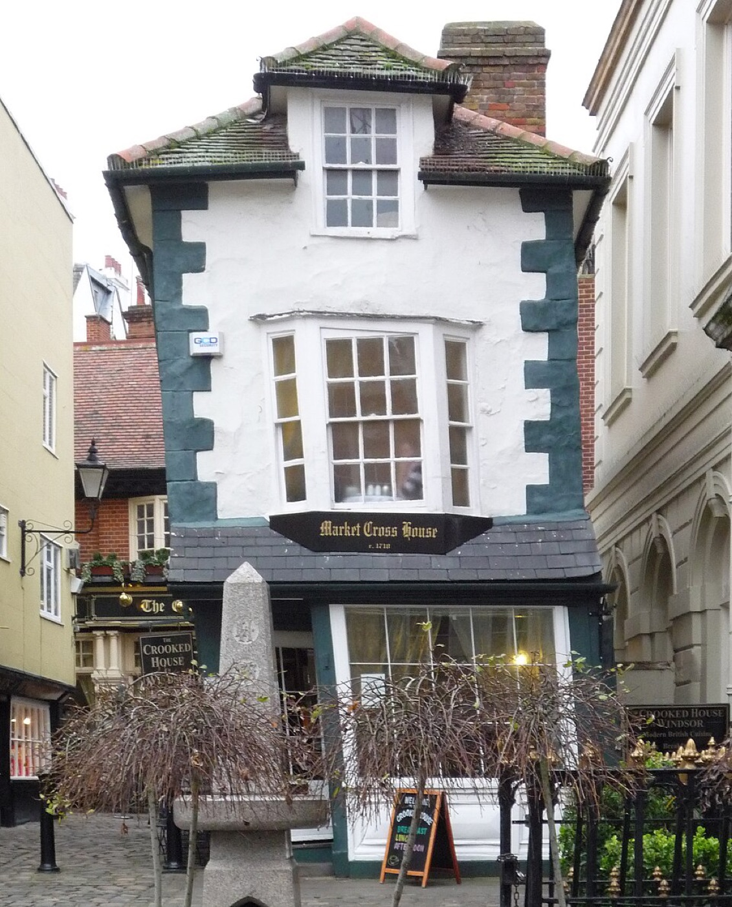
Un viale alberato dritto per circa 4 chilometri, voluto da Carlo II negli anni 1680, dal castello alla statua di Giorgio III a cavallo. Gratis, aperto dalle 7 al tramonto. A febbraio basta il primo tratto: 15-20 minuti, poi ci si gira per la foto del castello in fondo al viale.
Si attraversa il Tamigi sul Windsor Bridge, tra i cigni, e si arriva sulla High Street di Eton. In fondo c'è l'Eton College, fondato nel 1440 da Enrico VI, dove hanno studiato anche i principi William e Harry. Il collegio non si visita: le visite guidate sono sospese. I suoi musei, gratis, aprono solo la domenica dalle 13:30 alle 16.
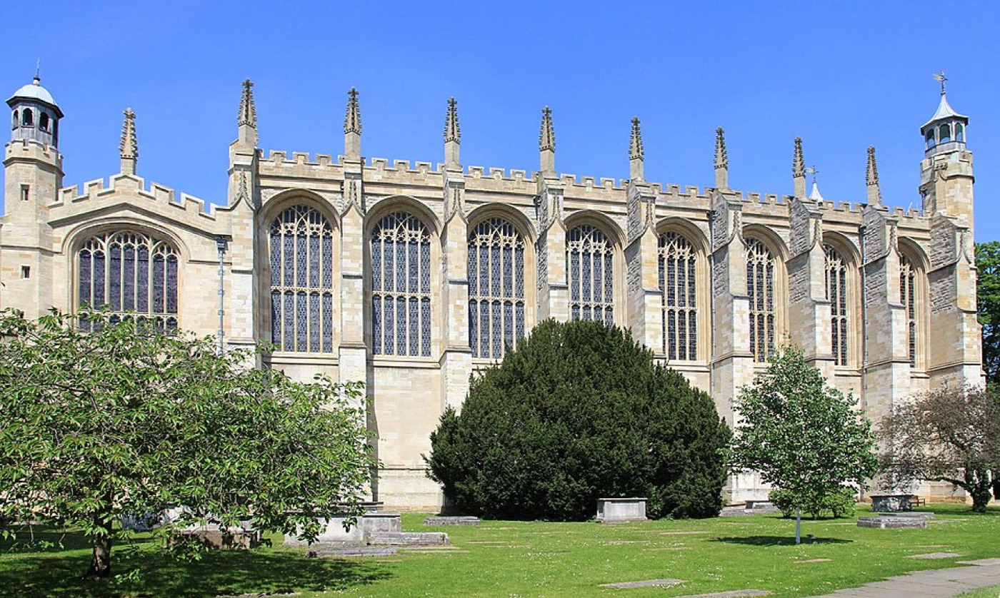
Windsor & Eton Central, dove arrivano i treni da Slough, è dentro il centro commerciale Windsor Royal Shopping, ai piedi del castello. Windsor & Eton Riverside, dei treni da Waterloo, è vicino al fiume. Da tutte e due il castello è a meno di 10 minuti a piedi.
Windsor · Organizzarsi
Prezzi del sabato, novembre 2026. Nel treno la ragazza di 16 anni paga da adulta. Lo sconto GroupSave (da 3 a 9 persone, un terzo in meno) si applica da solo comprando online. Il contactless costa di più: tariffa intera e niente sconti per i ragazzi.
Con i Days Out Guide delle ferrovie, chi arriva in treno paga il castello a metà prezzo, fino a 6 biglietti, da giovedì a lunedì fino al 22 marzo 2027. Si prenota il voucher online e si mostra il biglietto del treno. Per noi 8, circa £120 invece di £208. Questi biglietti non diventano annuali.
Due catene italiane una accanto all'altra, con menu per ragazzi. Per un tavolo da 8 prenotate.
Ramen e piatti asiatici veloci, prenotazioni per gruppi online. Evitate il pub Two Brewers: dentro si entra solo dai 18 anni.
Controllate il calendario delle guardie (householddivision.org.uk), le chiusure improvvise del castello su rct.uk e i lavori sulle linee del fine settimana (nationalrail.co.uk e tfl.gov.uk). Nel castello c'è anche l'Undercroft Café, per un tè a metà visita.
Crediti fotografici
Foto da Wikimedia Commons, pubblicate con licenze Creative Commons o in pubblico dominio. Mappe: Esri, HERE, Garmin e i contributori di OpenStreetMap. Linee della metro: OpenStreetMap.
Appunti